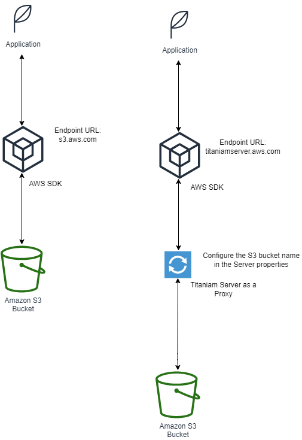

POC Installation with AWS Secrets Manager
This section describes how you can install all Titaniam Server components on a virtual machine.
Titaniam Server Artifacts
Obtain the following installation artifacts from Titaniam support:
Images:
Titaniam-Server
Search Engine with the Titaniam Plugin pre-installed
Docker Compose template
License file and SHA Checksum
Titaniam docker images are available in a private repository in Docker Hub. You need an access token to download the images. Contact Titaniam support to get your access token.
Install Process
Store the following as secrets:
License
Titaniam Server application properties
Encryption keys
Configure Titaniam Server as one of the following services:
Translation Service
Vault
Proxy for the object store
Elastic Proxy
Generate the
docker-compose.ymlfile.Bring up the Titaniam Server service using
docker-compose.
Step 1: Supplying Configuration Values and Keys using AWS Secrets Manager
Titaniam supports supplying all the application properties, licenses, and encryption keys through a secret entry in AWS Secrets Manager. The advantage of doing this is that you can maintain the configuration settings centrally instead of storing the settings in each server node.
Use this procedure (supplying_secrets) here to create the following new secrets:
Titaniam License (see Step 1.a: Content of titaniam.license secret)
Data Encryption keys (see Step 1.b: Store Encryption Keys)
Configuration properties (see Step 1.c: Create Configuration Settings)
Related Topics
Next Step: Step 2: Configure Services
Step 1.a: Content of titaniam.license secret
The following content can be copied and pasted as a secret named titaniam.license in the PlainText view.
The secret name can be of the following formats:
<prefix>titaniam.license.<prefix>is the value of the propertytitaniam.secrets.prefixfrom thedocker-compose.ymlfile.titaniam.licenseif you have not specified the propertytitaniam.secrets.prefix.
The values provided here are just examples. Edit it to reflect the license file and SHA that you received from Titaniam Support before you save the secret. Occasionally the license file may include an expiry date. You can leave that in place. It does not affect the behavior.
{
"digest": "P9r7miQDNOf/0HWg8WQjBotJ79PP6WTw+0BQ9VT/fXQ=",
"license":"vwOraInV23PJ2ePSqHmsnULtSfi98AYO2NHJDCv3f39INv4c9xIGiry3fyW19iZ3nOpIb3QI2akOSg0I6/CZvweoozFtZnP3xqWWXL6t4hhCBNuCdpWGh3XCAVN2xXb5u8S55GjTeWs3IZz5JnHOTSPUCBunicy2TSPNmo/4ScNM7fQagyrqxsiQphq9hnU8vmngQ4E3udqIh086S++2ERk+nki/TDpMWpOxCVcf3ZdnVo+Ra+Tw01MIOxeM3PuRzFMAVJNyGb7BumDfmN6wOlnzpXoVKkDSfQwD1pwkpJcMpKcX8uJMmPo0fJ022w3j0bjMsHy/buMeUybRSdjYUzrIrNosrjDJtoCgel8ygOrscUf9HnJFIziRSd2wCzNpyZyJFUKWhV7LHATPigmeXoHHqWlND0f5YECdvlqLdZXnZllYxuv/xOAIPKzjSyN+GeESmoQavFTNL14XGSKw6Xz825iBdyRJkGW/JsYClBemBRQelgkoxerBTyq80CcSmaie5UdblYuMwTXr13sySWJbX7VdKMKoReRGun+vphHBQnTDPIagb1AiYnsOjSMYdK03SZvGjuujzwRwgn23m9pBJL3iaGTP+1cTrqN/b6FijTsAzxU55Ny3YbQ54f4zM7g0lk0wZepPtPpTG3hx6D83StcNaXRxRx5u3YB5ET8="
}
Related Topics
supplying_secrets
Step 1.b: Store Encryption Keys
You have two options of using the data encryption keys.
Option 1, Storing Encrypted Data Keys: Includes a master key (also called as Key Encryption Key, KEK) and one or more data encryption keys. The data encryption keys are encoded using the master key before adding them to the AWS Secrets Manager. You can select one of the data encryption keys as an active key.
Generate an encrypted data encryption key and optionally a master key. If you have an existing master key, you can choose not to generate the master key. See Generate an Encrypted Data Encryption Key and Optionally a Master Key.
Store the master key as
<prefix>titaniam_key_ring/<department>/titaniam_key_encryption_keyortitaniam_key_ring/<department>/titaniam_key_encryption_key. This key is the master encryption key.Store the encrypted data key as a secret:
<prefix>titaniam_key_ring/<keyring_name>/<INDEX_NAME>ortitaniam_key_ring/<keyring_name>/<INDEX_NAME>.Titaniam Server uses only keys that have the
Activetag.
Option 2, Storing Plain Data Keys: Generate a data encryption key and store it as a Secret in the AWS Secrets Manager. You are not encrypting the data encryption key with a master key in this case. See Generate Keys.
Note
<prefix>is the string from the propertytitaniam.secrets.prefixin thedocker-compose.ymlfile. If you have not mentioned thetitaniam.secrets.prefixproperty, the secret name must be of the formattitaniam_key_ring/<keyring_name>/<INDEX_NAME>for data encryption key andtitaniam_key_ring/<department>/titaniam_key_encryption_keyfor master encryption key.titaniam_key_ringmust be entered as is. This is the namespace that Titaniam server looks for when loading the encryption keys.<keyring_name>is the name of the keyring. This name distinguishes different Titaniam installations. Decide a name for the Titaniam Server installation (for example production_finance, dev_sandbox).
Related Topics
supplying_secrets
Step 1.c: Create Configuration Settings
Populate the rest of the configuration settings in a secret.
Create a new secret called
titaniam.properties.Copy and paste the titaniam.properties Secret to the secret using PlainText view.
Edit the entries to reflect your installation reality. Pay attention to these specifically:
Save the secret.
Related Topics
supplying_secrets
Integrating with the Data Store
Titaniam Server uses a datastore to store the metadata and schema versions. After you install the Titaniam Server, you must ensure that the Titaniam Server can communicate with the data store.
Open the
titaniam.propertiesfile and edit the sections corresponding to the database you are using.(If using MySQL) Specify the following properties:
"spring.datasource.url": "jdbc:mysql:<database_URL>", "spring.datasource.username": "<username>", "spring.datasource.password": "<password>", "spring.datasource.driver-class-name": "com.mysql.cj.jdbc.Driver", "spring.jpa.properties.hibernate.format_sql": "true", "spring.jpa.properties.hibernate.dialect": "org.hibernate.dialect.MySQL57InnoDBDialect", "spring.datasource.hikari.minimumIdle": "5, "spring.jpa.hibernate.ddl-auto": "update"
(If using MariaDB) Specify the following properties:
"spring.datasource.url": "jdbc:mariadb:<database_URL>", "spring.datasource.username": "<username>", "spring.datasource.password": "<password>", "spring.datasource.driver-class-name": "org.mariadb.jdbc.Driver", "spring.jpa.properties.hibernate.format_sql": "true", "spring.jpa.properties.hibernate.dialect": "org.hibernate.dialect.MariaDB53Dialect", "spring.datasource.hikari.minimumIdle": "5, "spring.jpa.hibernate.ddl-auto": "update"
(If using PostgreSQL) Specify the following properties:
"spring.datasource.url": "jdbc:postgresql<database_URL>", "spring.datasource.username": "<username>", "spring.datasource.password": "<password>", "spring.datasource.driver-class-name": "org.postgresql.Driver", "spring.jpa.properties.hibernate.format_sql": "true", "spring.jpa.properties.hibernate.dialect": "org.hibernate.dialect.PostgreSQL10Dialect", "spring.datasource.hikari.minimumIdle": "5, "spring.jpa.hibernate.ddl-auto": "update"
Where,
<database_URL> is the URL (including the port) where you can access the database. For example:
(PostgresSQL)#spring.datasource.url=jdbc:postgresql://tlab1/titaniam_v1 (MySQL) #spring.datasource.url=jdbc:mysql://localhost:3306/testdb (MariaDB) #spring.datasource.url=jdbc:mariadb://localhost:3306/testdb
<username> is the username for accessing the database.
<password> is the password required to access the database.
Step 2: Configure Services
You can choose to configure Titaniam Server as one of the following services:
Translation Service
Vault
Proxy for the object store
Elastic Proxy
The following subsections describe the properties needed for each of the services:
Related Topics
Previous Step: Step 1: Supplying Configuration Values and Keys using AWS Secrets Manager
Next Step: Step 3: Compose the docker-compose.yml File
Step 2: Configure Service: Translation Service
You must set the following property in the docker-compose.yml file and disable the other services:
- panther.enabled=true
Related Topics
Step 2: Configure Service: Configure as a Vault
Enable the vault service. Set the following property in the docker-compose.yml file:
- sdv.enabled=true
Configure Secure Search Index
When you configure Titaniam Server as a vault, you must also configure a secure search index (Titaniam plugin integrated with Elasticsearch). You must configure the following:
Configure the following properties in the arcus: section of the docker_compose_yml file:
- aws_region=us-east-2 - titaniam.keyring.name=<keyring-name> - titaniam.store.type=aws - titaniam.aws.access.id=<AWS_ACCESS_ID> - titaniam.aws.secret.id=<AWS_SECRET_ID> - node.name=arcus01 - http.port=9200
Configure the following property in the
spectra:section of thedocker-compose.ymlfile:- spring.elasticsearch.rest.uris`: this property must match the IP and port of the elastic configured in the `arcus` section.
For example:
- spring.elasticsearch.rest.uris=http://arcus:9200
Related Topics
Step 2: Configure Service: Proxy for the S3 Object Store
You can use the Titaniam Server as an S3 proxy to protect any requests to an S3 bucket in the specified region. The following diagrams illustrate the configuration with and without the Titaniam Server as a proxy. When the Titaniam Server is configured as an proxy, it passes through the endpoint requests except the PUTObject and GETObject endpoints. These endpoints are intercepted by the Titaniam Proxy for S3 and the data is encrypted and decrypted.
Enable the proxy service. You must set the following property and disable other services in the docker-compose.yml file:
- ripple.enabled=true
- amazon.s3.bucket-name=[bucket_name]
- amazon.s3.access-key=[access_key_id]
- amazon.s3.secret-key=[secret_access_key]
Where,
* ``amazon.s3.access-key`` and ``amazon.s3.secret-key`` are the access credentials for AWS S3. Ensure that you encrypt these using the zero-day encryption service. See :ref:`zero-day-encrypt`.
* ``amazon.s3.bucket-name``=<bucket_name> is the S3 bucket name.
Configure your Application to Route Traffic to Titaniam S3 Proxy
In your application, you must override the existing endpoint URL. You must now point the endpoint URL to the Titaniam S3 Proxy.
If you are using AWS SDK V1, modify the endpoint URL as follows:
AmazonS3 s3 = AmazonS3ClientBuilder.standard()
.withEndpointConfiguration(new EndpointConfiguration(
"{{secureStoreURL}}/v2/titaniam-s3-proxy",
"region"))
.withCredentials(CREDENTIALS_PROVIDER)
.build();
Where, you {secureStoreURL}}/v2/titaniam-s3-proxy points to the Titaniam S3 Proxy URL.
If you are using AWS SDK V2, modify the endpoint URL as follows:
URI endpointOverride = new URI("{{secureStoreURL}}/v2/titaniam-s3-proxy");
S3Client.builder()
.credentialsProvider(CREDENTIALS_PROVIDER)
.endpointOverride(endpointOverride)
.region(region)
.build();
Where, you {secureStoreURL}}/v2/titaniam-s3-proxy points to the Titaniam S3 Proxy URL.
If you are using boto3, modify the endpoint URL during client creation as described here.
Related Topics
Step 2: Configure Service: Elastic Proxy
When you configure Titaniam Server as an elastic proxy, you must configure the following properties:
Create a folder on your virtual machine:
/var/lib/arcusdata.Enable the elastic proxy service. Disable the other services. Set the following property in the
docker-compose.ymlfile:- sdss.esproxy.enabled=true
Configure the location of the keys:
(Optional) If you are using the active key from the AWS Secrets Manager, Configure the following properties in the
arcus:section of thedocker-compose.ymlfile:- aws_region=us-east-2 - titaniam.keyring.name=vault-singlenode-byok - titaniam.store.type=aws - titaniam.aws.access.id=<AWS_ACCESS_ID> - titaniam.aws.secret.id=<AWS_SECRET_ID> - node.name=arcus01 - http.port=9200 - indices.query.bool.max_clause_count=2000
(Optional) If using byok (bring your own key) mode,
In your
docker-compose.ymlfile, configure the following lines of code in the arcus section:# byok configuration - titaniam.store.type=byok - titaniam.es.host=http://arcus:9200 - titaniam.byok.refresh-secs=30
In your docker-compose.yml file, configure the following lines of code in the spectra section:
# byok configuration - sdss.seed.store.type=byok - sdss.byok.host=http://arcus:9200 - sdss.byok.refresh-secs=30
Configure the following property in the
spectra:section of thedocker-compose.ymlfile:spring.elasticsearch.rest.uris=http://arcus:9200indicates the URL of the Titaniam plugin.(Optional)
sdss.es.login=adminindicates the admin login of the elastic node. This property is required only if you have installed Elasticsearch with authentication.(Optional)
sdss.es.passwordprovide the password after encrypting it with the master encryption key. This property is required only if you have installed Elasticsearch with authentication.sdss.search.proxy.override.fields.<INDEX_NAME>.<ABSOLUTE_FIELD_NAME>=<OVERRIDE_TYPE>specify any field properties in the elastic index that you want to override. For example, to return the values from the index as integers or boolean formats instead of strings. For example,
sdss.search.proxy.override.fields.example_index.days=integer sdss.search.proxy.override.fields.example_index.hours=integer
Related Topics
Step 2: Configure Service: Data Protection Service for Object Store
The Titaniam Server can be used as a data protection service for an object store. The data protection service for object stores lets you encrypt and decrypt objects in your object stores. Currently, AWS S3 is supported. This service lets you do the following operations:
Encrypt an object in-place in the object store. You must pass on the object reference to the data protection service.
Generate an encoded URI to an object. You can use this URI to download the object in clear format.
To enable the data-protection service, do the following:
(Configure at least one object store service) For example, If you are protecting objects in an AWS S3 object store, you must configure the Titaniam S3 proxy related properties (see _proxy_s3).
Set the following property file:
sdss.data.protection.enabled=true
Related Topics
Step 3: Compose the docker-compose.yml File
Specify the location of the encryption keys and titaniam.properties in the Secrets Manager in a docker-compose.yml file.
For examples of the docker-compose.yml files, see Appendix: Example Docker Compose YML Files and Property Files.
Set the following properties:
- sdss.properties-source=aws.sm - sdss.secretsmanager.properties.keyname=titaniam.properties - sdss.aws.sm.region=us-east-2 - sdss.aws.sm.keyring-name=<keyring-name> - sdss.seed.store.type=aws - sdss.aws.sm.access-key=<AWS_ACCESS_ID> - sdss.aws.sm.secret-key=<AWS_SECRET_ID> - titaniam.secrets.prefix=prefix
Where,
sdss.properties-sourceindicates that the configuration properties are stored in the AWS Secrets Manager.sdss.secretsmanager.properties.keynamespecifies the key name of the configuration properties file. This must be set totitaniam.properties.sdss.aws.sm.regionindicates the region of the AWS machines.sdss.aws.sm.keyring-nameindicates the <keyring_name> from the Secrets Manager. Secret name is of the format - titaniam_key_ring/<keyring_name>/<key_name>.sdss.seed.store.typespecifies that the keystore is in AWS.sdss.aws.sm.access-keyspecifies the encrypted access key required by Titaniam Server to access the Secrets Manager. Ensure that you specify the encrypted value. You can encrypt your client ID using the zero-day encryption (see Zero-day Encryption Service).sdss.aws.sm.secret-keyspecifies the encrypted secret key required by Titaniam Server to access the Secrets Manager. Ensure that you specify the encrypted value. You can encrypt your client ID using the zero-day encryption (see Zero-day Encryption Service).titaniam.secrets.prefixspecifies the prefix path to secrets in AWS Secrets Manager. For example if you have specifytitaniam.secrets.prefix=prefix1, you must store the titaniam.license in AWS Secrets as<prefix1>titaniam.licence. Encryptions keys as<prefix1>titaniam_key_ring/<keyring_name>/<INDEX_NAME>.
Related Topics
Previous Step: Step 2: Configure Services
Next Step: Step 4: Deploy Titaniam Server using Docker
Step 4: Deploy Titaniam Server using Docker
This section explains how to bring up the Titanaim Server service using docker.
Install Titaniam Server without Bringing up the Titaniam Services
If you are interested in pulling in the Titaniam Server docker image but not bringing up Titaniam Server, do the following as a root user:
docker pull titaniam/spectra:<version>
You must replace version with the actual version number. Contact Titaniam Support if needed.
Install Titaniam Server
As a root user, run the docker-compose image:
Login to the docker registry:
docker login
At the password prompt, enter the username and personal access token you received.
(Only if you are running the services as Vault or Elasticsearch proxy), bring up the Titaniam service with the plugin
docker-compose.ymlfile. Use the following commands:docker-compose up -d
Bring up the Titaniam Server service with the respective
docker-compose.yml, run the following command with the Titaniam Server service:docker-compose up -d
Post-Installation Steps
This chapter describes the following:
Accessing the Logs
Verifying the Installation
Logs
All logs are handled by the docker logs. See docker log documentation.
Run the following command tocheck logs for your container:
docker logs -f <container_name>
Verifying the Installation for Vault and Translation Services
Perform the following steps to verify that the installation is successful, send the following CURL request:
curl --location --request GET 'http:/<baseURL>:8080/actuator/health'
You must receive a response similar to the following:
{
"status": "UP",
"components": {
"db": {
"status": "UP",
"details": {
"database": "PostgreSQL",
"validationQuery": "isValid()"
}
},
"diskSpace": {
"status": "UP",
"details": {
"total": 53675536384,
"free": 7795793920,
"threshold": 10485760,
"exists": true
}
},
"ping": {
"status": "UP"
}
}
}